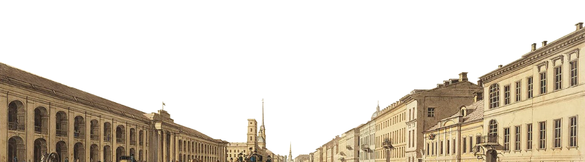
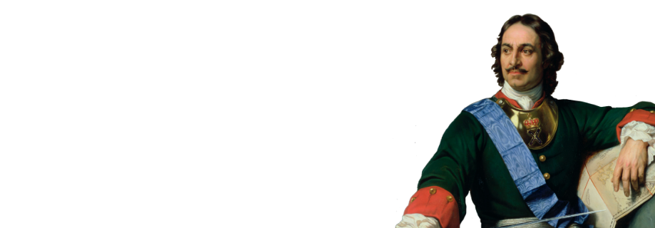

Россия в XVIII веке
Занятие 4
Россия в XVIII веке
(образование империи)
Посмотрите в словаре значения незнакомых слов и словосочетаний
Преодоление + чего? отсталость (ж.р.) достижение + чего? преобразовать =
изменить = переделать обнаружить + что?
предприниматель
заставлять - заставить + что делать? должность
(ж.р.) крепость (ж.р.) возраст привилегированный предотвратить
+ что? доверять + кому? доверие распорядительная (функция) совещательная
(функция) коллегия =
министерство отменить + что? преемник отставание
отдаляться - отдалиться + от кого? от чего?